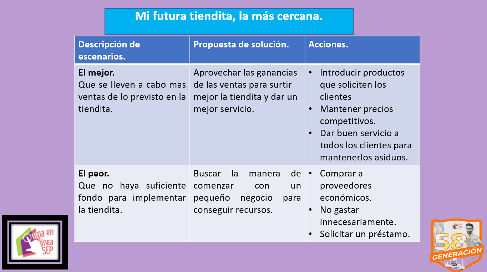

Medir y corregir
Análisis final del proyecto.

Puede ocurrir que en un proyecto sucedan inconvenientes que hagan cambiar drásticamente la dirección del mismo. En este último apartado describo el mejor y peor escenario, una propuesta de solución para cada uno y algunas acciones para mejorarlo o llevarlo a la ejecución.

Análisis final del proyecto.
